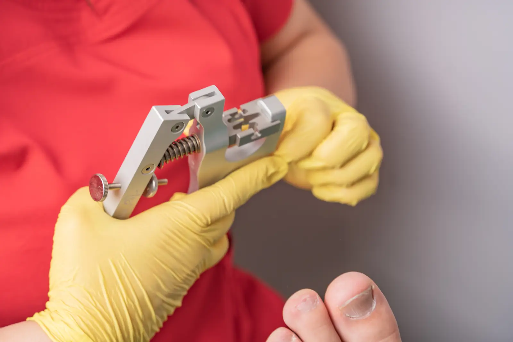

Wrastające i wkręcające się paznokcie
Korekta klamrą (ortonyksja), tamponada, kontrola i przestawianie klamry.
Założenie klamry 250-350 zł

Wrastające paznokcie, odciski, brodawki, stopa cukrzycowa, komputerowe badanie stóp i wkładki projektowane indywidualnie. Gabinety w Tychach i w Woli.
Tychy, ul. Zapolskiej 65BWola, ul. Lipowa 7a
Pielęgnację łączymy z profilaktyką: najpierw ustalamy, skąd bierze się problem, potem dobieramy zabieg, preparaty i w razie potrzeby odciążenie stopy. Ceny podajemy z naszego cennika.
Korekta klamrą (ortonyksja), tamponada, kontrola i przestawianie klamry.
Usuwanie zrogowaceń, opracowanie pięt z opatrunkiem, pielęgnacja zdrowych stóp.
Rozpoznanie zmiany, badanie mykologiczne lub bakteriologiczne, terapia i rekonstrukcja płytki.
Roczna kontrola diabetyka, medyczny zabieg podologiczny, leczenie ran. Wizyty domowe w Tychach.
Badanie statyczne i dynamiczne: podoskop, pedobarograf, planturograf, omówienie wyników.
Frezowane, projektowane do konkretnej stopy, także wzmocnione dla diabetyków i przy RZS.
Profilaktyczna wizyta, kinesiotaping i wkładka sensoryczna z możliwością przedłużenia.
Konsultacja, analiza badań, plan żywieniowy na 7, 14 dni lub 4 tygodnie.
Ból pięty, kolana czy pleców często zaczyna się od tego, jak stopa przenosi ciężar ciała. Dlatego zanim zaprojektujemy wkładkę albo plan terapii, sprawdzamy stopy w spoczynku i w ruchu.
Każdy prowadzi swoją część terapii i ma własny numer do zapisów, żeby od razu trafić do właściwej osoby.
Specjalista podologii i dietetyki klinicznej
Absolwentka Uniwersytetu Medycznego we Wrocławiu i Uniwersytetu Śląskiego, obecnie studiuje podiatrię. Szkoli z podologii i dietetyki klinicznej.
Ortopodolog, technik ortopeda i diagnosta
Absolwent Wyższej Szkoły Medycznej we Wrocławiu. Zajmuje się diagnostyką postawy, biomechaniką chodu i wykonywaniem wkładek.
Przed badaniem mykologicznym obowiązują osobne zalecenia - opiszemy je w strefie pacjenta.
Opinie z naszej obecnej strony, przyjeżdżają do nas nie tylko z Tychów.
Profesjonalnie wykonana usługa, fachowo i zrozumiale opisuje stan stóp i zalecenia na przyszłość.
Byłam na wizycie z 2 córkami. Pełen profesjonalizm, dokładność, troska o pacjenta, ogromna wiedza.
Bardzo rzetelny fachowiec, cieszę się, że trafiłam do takiego specjalisty.
Wszystko dokładnie tłumaczy, to już kolejna moja wizyta, a następna już niedługo.
Kompetencja, kontakt i zaangażowanie godne pochwały.
Jestem zadowolona, ulga po zabiegu.
Tyskie Centrum Podologii i Projektowania Wkładek Ortopodologicznych
ul. Zapolskiej 65B, Tychy
Centrum Szkoleń, Rehabilitacji i Sprawnej Stopy
ul. Lipowa 7a (budynek Pekao), 43-225 Wola
Można też zapisać się przez rejestrację online.